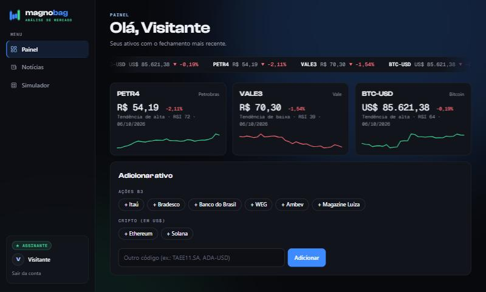
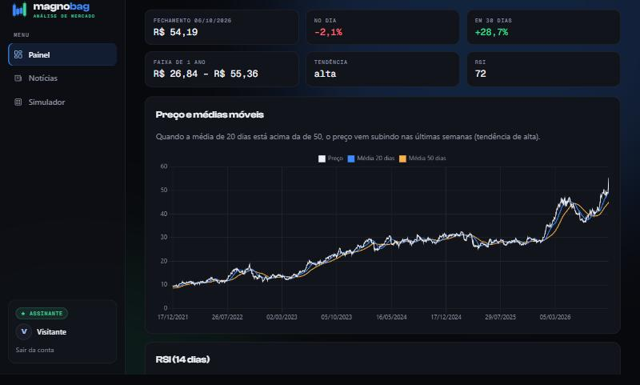
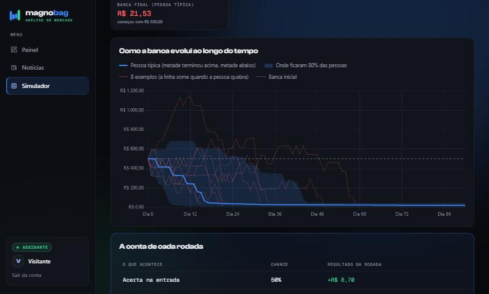
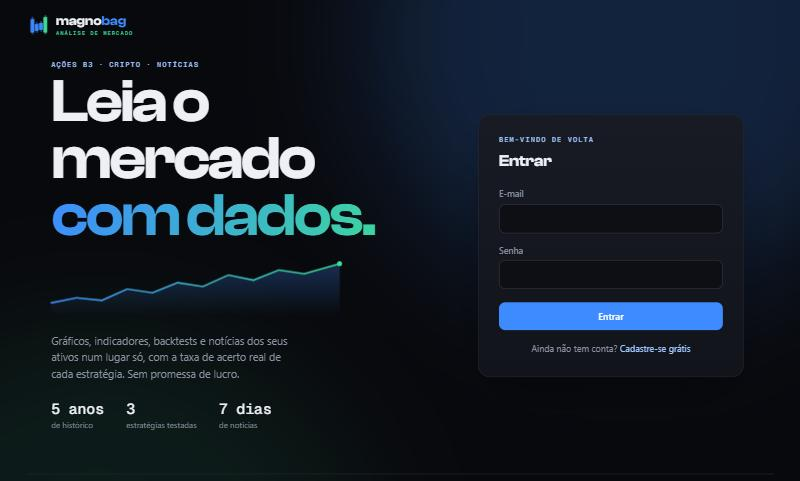
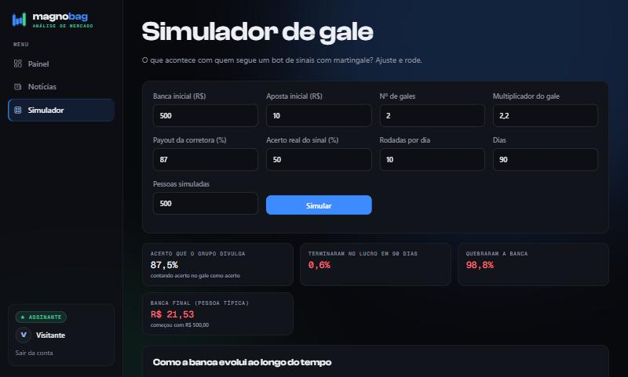

Ações B3 · Cripto · Câmbio · Notícias
Leia o mercado
com dados.
Magnobag reúne gráficos, indicadores, backtests e notícias dos seus ativos num lugar só, sempre mostrando a taxa de acerto real de cada estratégia. Sem promessa de lucro, sem "sinal milagroso".
Esta é a vitrine do projeto. O sistema completo roda com Python (Flask) e ainda não está hospedado.





O que ele faz
Uma plataforma completa de análise, do cadastro ao gráfico, pensada para estudar o mercado com honestidade.
Painel de ativos
Ações da B3, cripto e câmbio com preço, variação, tendência, RSI e um mini gráfico de 30 dias.
Backtests honestos
Compara estratégias com "comprar e segurar", com custo de operação e sem olhar o futuro.
Taxa de acerto real
Todo palpite vem com quantas vezes acertou no passado, ao lado de uma moeda (50%).
Notícias reunidas
Manchetes dos últimos 7 dias de cada ativo, filtráveis, sem precisar procurar.
Simulador de gale
Simula centenas de pessoas usando martingale e mostra a conta exata de cada rodada.
Contas e planos
Cadastro, plano grátis limitado, assinatura, contas cortesia e funções exclusivas do dono.
Os números que os grupos de sinais não mostram
Testado com dados reais. É por isso que o Magnobag mostra análise, e não "compre agora".
Como foi feito
Back-end em Python, front-end sem framework, com foco em segurança e microinterações.
Rodar no seu computador
Precisa de Python 3 instalado.
# baixar o projeto git clone https://github.com/JoseFrancisco-alt/magnobag.git cd magnobag # instalar as dependências e ligar o site pip install -r site/requirements.txt python site/app.py # abrir http://localhost:5000 e criar uma conta